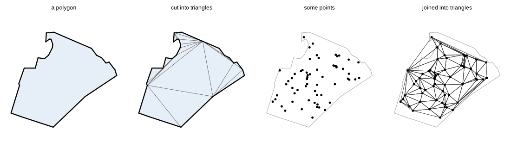
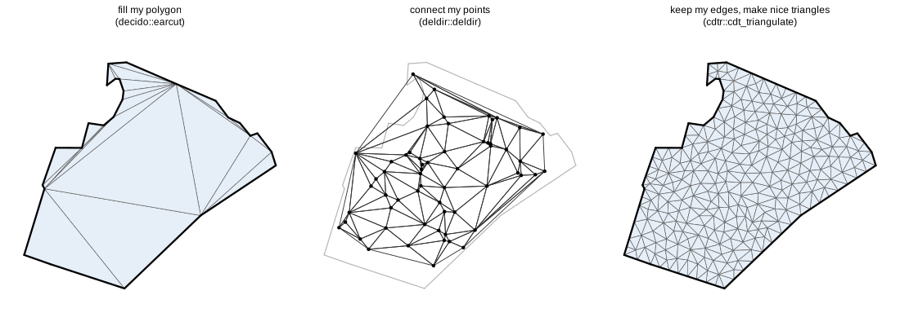
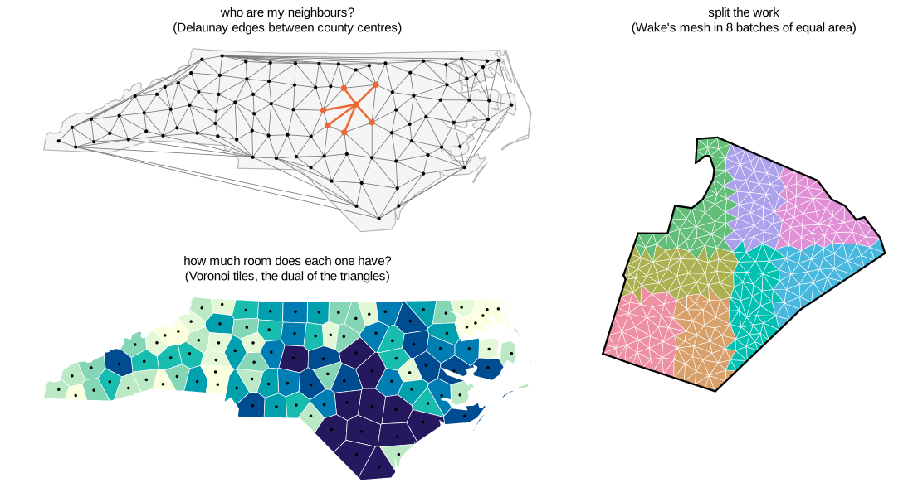
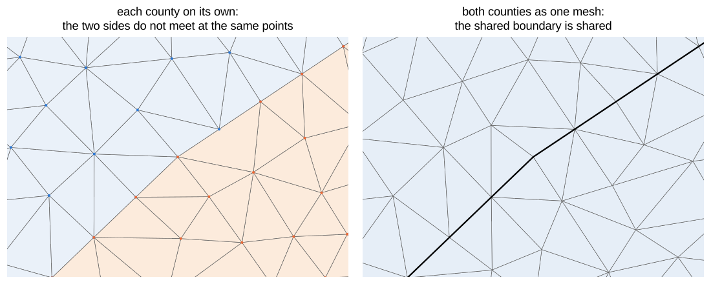

trianglewins / start here
Start here: triangles for spatial data
If you work with maps in R, you have probably met triangles without asking for them. Every filled polygon on a screen is drawn as triangles, and a terrain model is often a mesh of triangles. Spatial statistics packages such as INLA build a triangle mesh before they fit anything. This page explains what triangulation is, what it is good for, and which package to reach for. It assumes you know sf and nothing else.
What a triangulation is
A triangulation cuts a shape into triangles that fit together edge to edge, with no gaps or overlaps. You can start from a polygon or from a set of points.

Why triangles? A triangle is the simplest shape that can tile any polygon, and a triangle is always flat. If you know a value at each of its three corners (an elevation, say), there is exactly one sensible way to fill in the values inside. That makes triangles the natural unit for drawing, for interpolating, and for numerical models.
Three questions, three kinds of answer
Most needs come down to one of three questions. They look alike but they want different tools, because each one asks for a different promise about the triangles.

"Fill my polygon." You want to draw a polygon, extrude it, or compute with its pieces. Any triangles will do, as long as they cover the polygon exactly. The answer is ear cutting: fast, it adds no new points, and it doesn't care if the triangles are long and thin.
library(sf)
nc <- st_read(system.file("shape/nc.shp", package = "sf"))
wake <- st_transform(nc[nc$NAME == "Wake", ], 32119)
st_triangulate_constrained(st_geometry(wake)) # triangles as polygons
xy <- st_coordinates(wake)[, c("X", "Y")]
xy <- xy[-nrow(xy), ] # one ring; drop the repeated last point
decido::earcut(xy) # or as indices into xy, much faster"Connect my points." You have points (sample sites, weather stations, LiDAR returns) and want to know which are neighbours, or to interpolate between them. The answer is a Delaunay triangulation: the triangles are as close to equilateral as the points allow, and no point lies inside another triangle's circumcircle. It ignores any boundary and fills the convex hull of the points.
pts <- st_sample(wake, 60)
st_triangulate(st_union(pts)) # sf, via GEOS
deldir::deldir(st_coordinates(pts)[, 1], st_coordinates(pts)[, 2]) # with Voronoi tiles too"Keep my edges, and make the triangles nice." You have boundaries, coastlines, roads or contours that must stay as edges, and you want well-shaped triangles of a size you choose. This is a mesh for a model, a smooth surface, or a finite element solver. The answer is a constrained Delaunay triangulation, refined by adding new points until every triangle meets a minimum angle and a maximum area.
n <- nrow(xy)
m <- cdtr::cdt_triangulate(xy[, 1], xy[, 2], s0 = 1:n, s1 = c(2:n, 1),
max_area = 7e6, min_angle = 25) # m^2, degreess0 and s1 say which points are joined by an
edge that must be kept. cdtr is on GitHub
(remotes::install_github("hypertidy/cdtr")). On CRAN,
fmesher does this job for statistical meshes, and RTriangle does it in
general but has a non-commercial licence.
Triangles as a network
Once you have triangles you also have a network. Every triangle edge joins two points that are neighbours, every triangle knows the triangles beside it, and lengths and areas come straight from the coordinates. That is why triangulation answers questions such as "who is next to whom", "how far apart are they", and "how much ground does each one cover". It also lets you cut a region into pieces of equal size, so you can hand out the work.

Neighbours and distances. spdep builds its neighbour lists from a Delaunay triangulation of points:
nc <- st_transform(nc, 32119)
centres <- st_centroid(st_geometry(nc))
cxy <- st_coordinates(centres)
nb <- spdep::tri2nb(cxy) # each county's Delaunay neighbours
i <- which(nc$NAME == "Wake")
nc$NAME[nb[[i]]] # Franklin Durham Chatham Johnston Lee Harnett
spdep::nbdists(nb, cxy)[[i]] / 1000 # 46 34 55 40 59 50 kmThese are neighbours of the points, not of the counties. Lee
is listed but doesn't touch Wake, while Granville and Nash do touch it
and are missing. If you need counties that share a border, use
spdep::poly2nb(nc). A Delaunay triangulation also joins
points across open ground: see the long edges along the coast. Trim
edges that are longer than makes sense for your data.
Catchments. The Voronoi tiles are the other side of the same triangulation. Each tile holds the ground closer to its point than to any other point, so its area says how much room that point has: large tiles mean sparse points.
tiles <- st_voronoi(st_union(centres), st_as_sfc(st_bbox(nc))) |>
st_collection_extract() |>
st_intersection(st_union(nc))
tiles <- tiles[unlist(st_intersects(centres, tiles))] # back in county order
st_area(tiles)Work in equal pieces. A refined mesh has many small triangles of similar size. Sort them into batches of equal area and you can send each batch to a different worker, field team or process. Here, Wake's mesh from above is split into eight batches of about 274 km^2 each:
v <- m$P; tri <- m$T
tx <- matrix(v[tri, 1], ncol = 3); ty <- matrix(v[tri, 2], ncol = 3)
area <- abs((tx[, 2] - tx[, 1]) * (ty[, 3] - ty[, 1]) -
(tx[, 3] - tx[, 1]) * (ty[, 2] - ty[, 1])) / 2
halve <- function(cx, cy, a, k) { # k batches of equal area, k a power of 2
if (k == 1) return(rep(1L, length(a)))
v <- if (diff(range(cx)) > diff(range(cy))) cx else cy
o <- order(v)
i <- seq_along(a) %in% o[cumsum(a[o]) <= sum(a) / 2]
g <- integer(length(a))
g[i] <- halve(cx[i], cy[i], a[i], k / 2)
g[!i] <- halve(cx[!i], cy[!i], a[!i], k / 2) + k / 2
g
}
batch <- halve(rowMeans(tx), rowMeans(ty), area, 8)
tapply(area, batch, sum) / 1e6 # km^2 in each batchEach batch is a set of triangle rows, so the triangles that share an edge with another batch are easy to find when the pieces have to be stitched back together.
Three things that catch people out
Neighbouring polygons should be meshed together. If you mesh each polygon separately and add points, the two sides of a shared boundary get different points, and the meshes don't join up. Meshed as one, the shared boundary is one set of edges.

"Constrained" in sf, geos and terra means one polygon at a
time. st_triangulate_constrained() keeps each
polygon's edges, which is what you need for drawing. But it adds no new
points, takes no loose lines or points, and never sees two polygons as
one mesh.
Longitude and latitude are not flat. A maximum area in degrees squared means different things at the equator and near the poles, and "nicely shaped" triangles in degrees are stretched on the ground. Project your data first, as above, unless you are deliberately meshing the sphere. The same trap catches gridded data, where a grid can be regular in one frame and curved in another; that is the subject of Regular in what?.
Which package?
CRAN first, because it installs everywhere. Several problems are only solved off CRAN today, marked [GitHub].
| You want to | Try first | Also consider |
|---|---|---|
| Fill polygons with triangles for drawing | decido | rgl::triangulate, sf::st_triangulate_constrained |
| Delaunay triangles or edges of a point set | deldir | geometry (large sets, xyz and up), interp, the GEOS functions in sf and terra |
| Interpolate scattered values linearly | interp | geometry::tsearch; lidR, lasR for point clouds |
| A TIN from a height grid | terrainmeshr | lidR, lasR from LiDAR points |
| A mesh for an SPDE model (INLA, TMB) | fmesher | tulpaMesh |
| A mesh for finite elements on a polygon | fmesher, fdaPDE | RTriangle, tulpaMesh |
| Polygons, lines and points with every edge kept | RCDT | RTriangle, delaunay; [GitHub] cdtr |
| Good-shaped triangles on any set of edges | RTriangle | [GitHub] cdtr, laridae, trowel |
| Triangle size that varies over space | fmesher | geometry::distmesh2d; [GitHub] laridae |
| Add or remove points and edges after building | nothing on CRAN | [GitHub] trowel, laridae |
| A mesh on the sphere | fmesher | tulpaMesh; for points only, see Notes |
| Delaunay of xyz points (tetrahedra) | geometry, tessellation | delaunay |
Where to go next
- How the engines differ: the same inputs through earcut, GEOS and a full mesher, side by side, with the words (constraint, Steiner point, depth) explained as they come up.
- Package survey: every R package found, what algorithm and library it uses, and what it can and cannot do. A reference, not a read.
- Notes: what "2D" and "3D" mean to different people, and what interpolation on triangles promises.
- Benchmark: speed, memory and mesh quality at scale, for developers.
Figures are drawn by survey/start/figures.R.